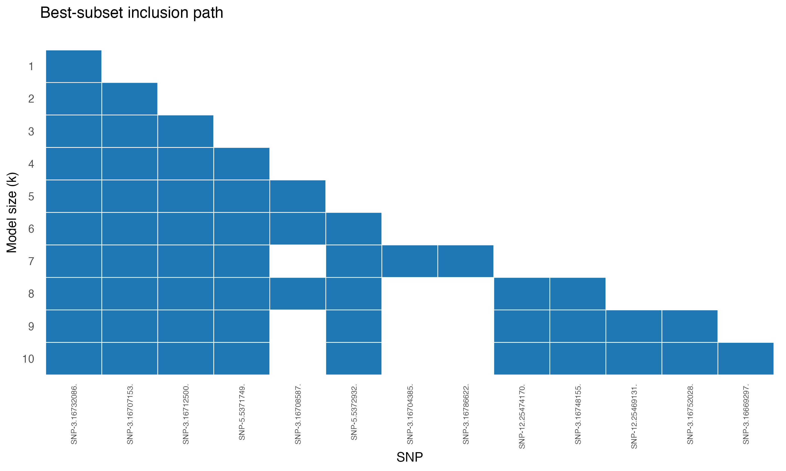
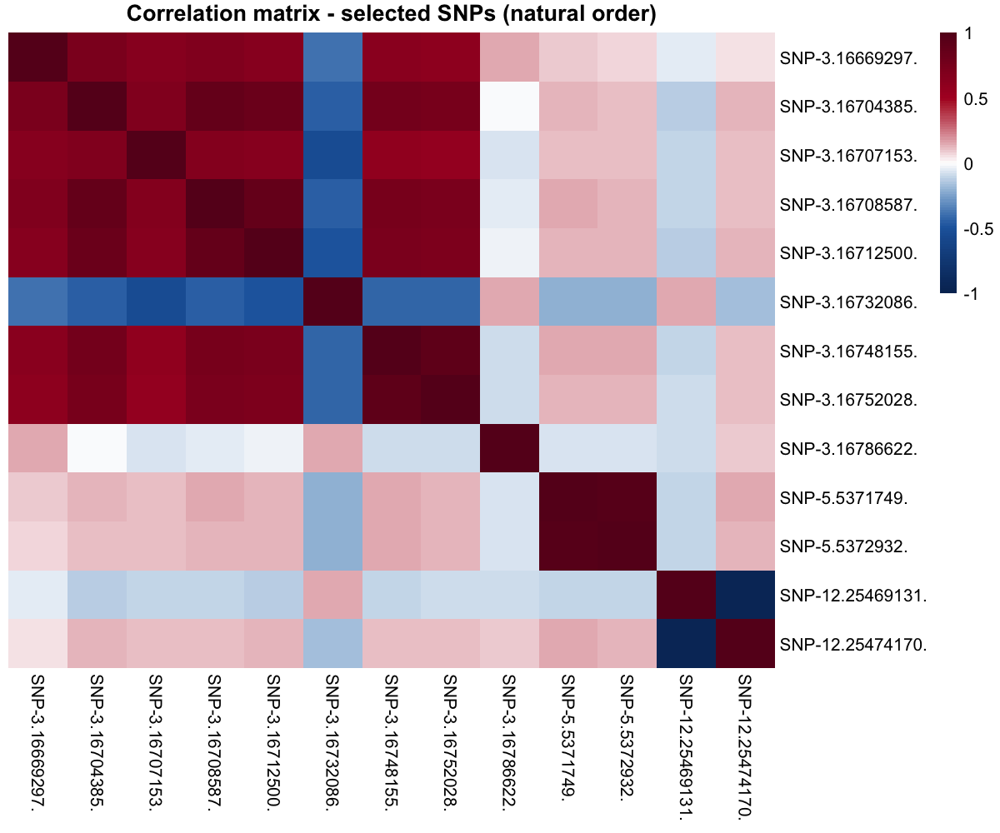

| k | Selected | |
|---|---|---|
| k1 | 1 | 43318 |
| k2 | 2 | 43307, 43318 |
| k3 | 3 | 43307, 43313, 43318 |
| k4 | 4 | 43307, 43313, 43318, 66479 |
| k5 | 5 | 43307, 43309, 43313, 43318, 66479 |
| k6 | 6 | 43307, 43309, 43313, 43318, 66479, 66480 |
| k7 | 7 | 43304, 43307, 43313, 43318, 43359, 66479, 66480 |
| k8 | 8 | 43307, 43309, 43313, 43318, 43335, 66479, 66480, 157373 |
| k9 | 9 | 43307, 43313, 43318, 43335, 43336, 66479, 66480, 157368, 157373 |
| k10 | 10 | 43288, 43307, 43313, 43318, 43335, 43336, 66479, 66480, 157368, 157373 |
Rice GWAS
\(p \approx 158{,}000\) SNPs, \(n = 1{,}155\) rice accessions, a known grain-length locus
The biology
Grain length is one of the most economically important traits in rice breeding. The major effect locus has been mapped to the GS3 gene on chromosome 3, identified independently by multiple GWAS groups using thousands of accessions.
Can COMBSS recover this locus de novo from raw SNP data, working at the scale of a real GWAS?
The data
- \(n = 1{,}155\) rice accessions (3K Rice Genomes Project subset)
- \(p = 158{,}210\) SNPs after QC (MAF filter, call-rate filter)
- Binary response: long-grain vs short-grain (threshold at 6 mm)
- Population stratification corrected via the top principal components of the kinship matrix
Source: McCouch et al. (2016), 3,000 rice genomes project. Data preparation and QC are described in Mathur, Liquet, Muller, Moka (2026).
Running COMBSS (sketch)
Once dataYX has columns [y, PCs..., SNP1, SNP2, ..., SNP_p]:
library(combss)
y <- dataYX$y
x_snps <- as.matrix(dataYX[, -c(1, 2)]) # drop y and intercept-like column
fit_rice <- combss(x_snps, y,
family = "binomial",
q = 10)
fit_rice$subset_listfrom combss import logistic
y_rice = dataYX["y"].to_numpy()
X_snps = dataYX.drop(columns=["y", "intercept"]).to_numpy()
fit_rice = logistic.model()
fit_rice.fit(X_snps, y_rice, q=10, verbose=False)
print(fit_rice.subset_list)The call returns a nested-looking subset path for \(k = 1, \ldots, 10\). We tabulate the selected SNP indices below.
The selected SNPs
The model at each size \(k\):
The single best SNP at \(k = 1\) — index 43318 — falls inside the GS3 gene region on chromosome 3, the well-known grain-length locus. SNPs 43307, 43313 (chromosome 3 neighbours of GS3) enter at \(k = 2, 3\). The cluster around 66479, 66480 (chromosome 5) and 157368, 157373 (chromosome 12) join the model as \(k\) grows, picking up secondary loci known from independent GWAS.
Best-subset inclusion path
The full inclusion-path figure (Figure 4a in the paper):

The earliest-included SNPs are tightly clustered on chromosome 3 — the GS3 locus. Additional chromosomes contribute as \(k\) grows.
Correlation among selected SNPs

The block-diagonal structure tells the right biological story: SNPs from the same chromosomal region are in strong linkage disequilibrium, while across chromosomes they are nearly uncorrelated.
Why this matters
- COMBSS scans 158,210 SNPs in a few minutes on a laptop — the regime where exact best-subset is hopeless and lasso typically returns hundreds of correlated SNPs.
- The single best SNP it returns lands on the known functional locus, with no prior biological input.
- For a breeder, ten SNPs is a tractable downstream panel; several hundred is not.
Reference
McCouch, S. R. et al. (2016). Open access resources for genome-wide association mapping in rice. Nature Communications 7, 10532.